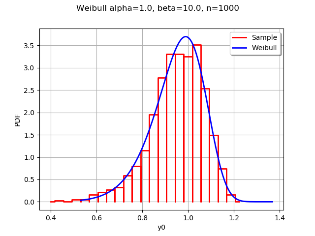
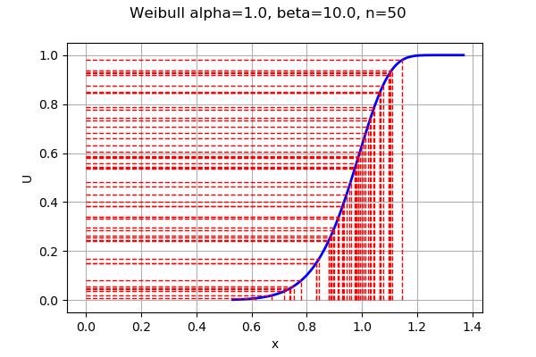

Generate random variates by inverting the CDF¶
Abstract¶
In this example, we show how to generate random variates by inversion of the cumulated distribution function. In simple situations, this method is rarely used in practice because of problems with performance, statistical quality of the generated random variates and numerical accuracy of the generated numbers when we use floating point numbers. However, it is an interesting method to know about because it is a building block for other algorithms and can be used to visualize the distribution of the generated numbers.
The Weibull distribution¶
Let and be two real parameters:  is a shape parameter and
is a shape parameter and  is a scale parameter.
is a scale parameter.
The cumulated distribution function of the Weibull distribution is:
for any  .
.
In some situations, this parameters are denoted by and .
The inverse of the CDF is:
for any .
This is the quantile function, because it computes the quantile depending on an outcome  .
.
Loss of accuracy when the probability is close to 1¶
In practice, if the probability  is very close to 1, then the complementary probability is close to zero. This can lead to a significant loss of accuracy when we evaluate the subtraction with floating point numbers because and 1 have lots of common digits. This is called a loss of accuracy by catastrophic cancellation, a problem which is common in extreme events.
is very close to 1, then the complementary probability is close to zero. This can lead to a significant loss of accuracy when we evaluate the subtraction with floating point numbers because and 1 have lots of common digits. This is called a loss of accuracy by catastrophic cancellation, a problem which is common in extreme events.
We can use the function, defined by the equation:
for any . This is not numerically equivalent to computing exp and then subtracting 1. Indeed, the expm1 function is more accurate when its argument x is close to zero.
The CDF is then:
for any .
For the quantile function, we can use the function, defined by the equation:
for any .
Therefore, the quantile function is:
pour .
In the following, we will not use these robust equations and this issue will not be taken into account.
Generate by inversion: histogram and density¶
[1]:
import openturns as ot
import numpy as np
The following function defines the quantile function of the Weibull distribution. (Of course, we could use the computeQuantile method of the Weibull class as well. This would create a simpler, but less interesting example: this is a trade off that we accept in order to better understand the algorithm.)
[2]:
def weibullQ(argument):
p, alpha, beta = argument
quantile = alpha*(-np.log1p(-p))**(1/beta)
return [quantile]
[3]:
quantileFunction = ot.PythonFunction(3, 1, weibullQ)
We define the parameters of the Weibull distribution and create the parametric function.
[4]:
alpha = 1.0
beta = 10.
[5]:
quantile = ot.ParametricFunction(quantileFunction,[1,2], [alpha,beta])
quantile
[5]:
ParametricEvaluation(class=PythonEvaluation name=OpenTURNSPythonFunction, parameters positions=[1,2], parameters=[x1 : 1, x2 : 10], input positions=[0])
In the library, the uniform distribution is by default over the interval. To obtain a uniform distribution over ![[0,1]](../../_images/math/35553d8536d15adad653d39e5b507dbb08b6b885.svg) , we need to set the bounds explicitly.
, we need to set the bounds explicitly.
[6]:
U = ot.Uniform(0.,1.)
Then we generate a sample of size 1000 from the uniform distribution.
[7]:
n = 1000
uniformSample = U.getSample(n)
To generate the numbers, we evaluate the quantile function on the uniform numbers.
[8]:
weibullSample = quantile(uniformSample)
In order to compare the results, we use the WeibullMin class (using the default value of the location parameter ).
[9]:
W = ot.WeibullMin(alpha,beta)
[10]:
histo = ot.HistogramFactory().build(weibullSample).drawPDF()
histo.setTitle("Weibull alpha=%s, beta=%s, n=%d" % (alpha,beta,n))
histo.setLegends(["Sample"])
wpdf = W.drawPDF()
wpdf.setColors(["blue"])
wpdf.setLegends(["Weibull"])
histo.add(wpdf)
histo
[10]:

We see that the empirical histogram of the generated outcomes is close to the exact density of the Weibull distribution.
Visualization of the quantiles¶
We now want to understand the details of the algorithm. To do this, we need to compare the distribution of the uniform numbers with the distribution of the generated points.
[11]:
n = 50
uniformSample = U.getSample(n)
[12]:
weibullSample = quantile(uniformSample)
We sort the sample by increasing order.
[13]:
data = ot.Sample(n,2)
data[:,0] = weibullSample
data[:,1] = uniformSample
data.setDescription(["x","p"])
[14]:
sample = ot.Sample(data.sort())
sample[0:5,:]
[14]:
| x | p | |
|---|---|---|
| 0 | 0.6159410787897307 | 0.00782863698262859 |
| 1 | 0.6738735110271081 | 0.019124825063157713 |
| 2 | 0.71948944217764 | 0.03649193877930723 |
| 3 | 0.736821724254262 | 0.04607046773214285 |
| 4 | 0.74114867193246 | 0.0487797035823434 |
[15]:
weibullSample = sample[:,0]
uniformSample = sample[:,1]
[16]:
graph = ot.Graph("Weibull alpha=%s, beta=%s, n=%s" % (alpha,beta,n),"x","U",True)
# Add the CDF plot
curve = W.drawCDF()
curve.setColors(["blue"])
graph.add(curve)
# Add the horizontal lines
for i in range(n):
curve = ot.Curve([0.,weibullSample[i,0]],[uniformSample[i,0],uniformSample[i,0]])
curve.setColor("red")
curve.setLineStyle("dashed")
graph.add(curve)
# Add the vertical lines
for i in range(n):
curve = ot.Curve([weibullSample[i,0],weibullSample[i,0]],[0.,uniformSample[i,0]])
curve.setColor("red")
curve.setLineStyle("dashed")
graph.add(curve)
graph
[16]:

This graphics must be read from the U axis on the left to the blue curve (representing the CDF), and down to the X axis. We see that the horizontal lines on the U axis follow the uniform distribution. On the other hand, the vertical lines (on the X axis) follow the Weibull distribution.